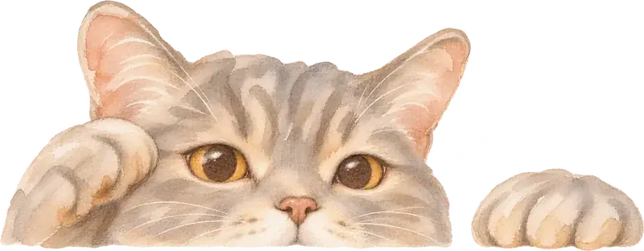
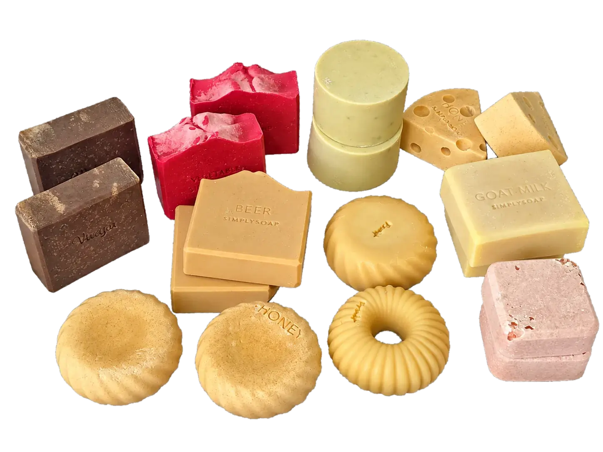
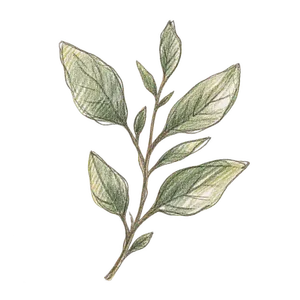
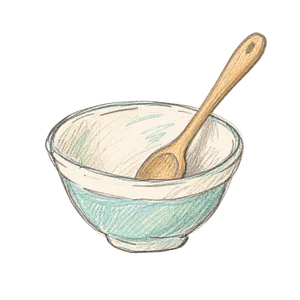
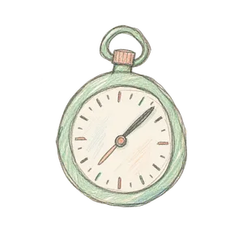
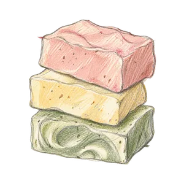
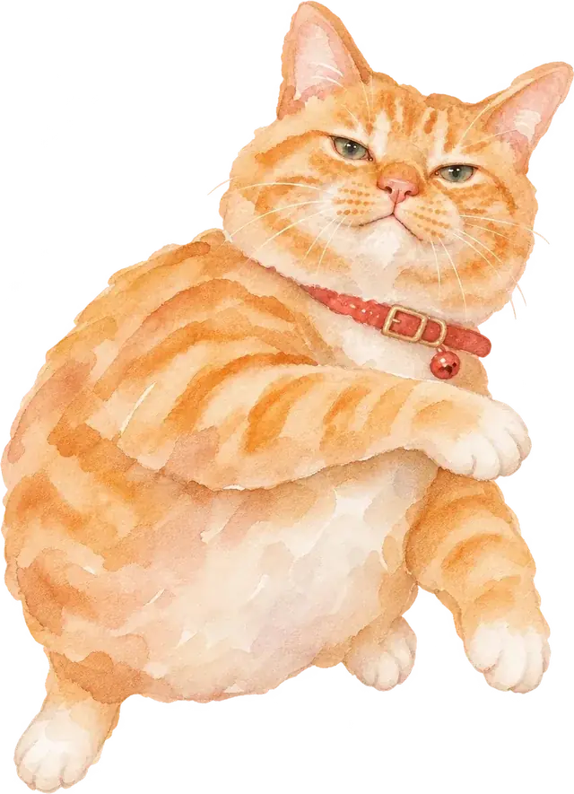

01 / Handmade soap
Small batches · Cold-process · Malaysia

Each soap is made by hand, so the shapes, edges and colours vary from batch to batch. Some bars have uneven surfaces or small marks from the mould.

I try seasonal ingredients and everyday kitchen staples in different batches.

I mix, pour and cut everything by hand.

Each batch needs 4–8 weeks to cure and harden before it’s ready.

I make a limited number of bars at a time.
02 / The soaps
Best for
03 / Good to know
Tap a card to flip it
My soap is made from plant oils, keeps its natural glycerin and has no SLS or SLES. If your skin feels tight after washing, tell me and I’ll suggest a gentler bar.
Let it dry between uses on a dish that drains well, so it doesn’t sit in water and go soft. Keep unused bars somewhere cool and dry, away from direct sunlight.
Handmade soap changes over time, so use it within a year of curing. The scent may fade, and the bar may soften a little in humid weather. A cool, dry spot helps it last.
Yes. Send me the scent, size and quantity you have in mind through the enquiry form, and I’ll tell you what I can make and how long it will take, including curing time.
04 / Order
